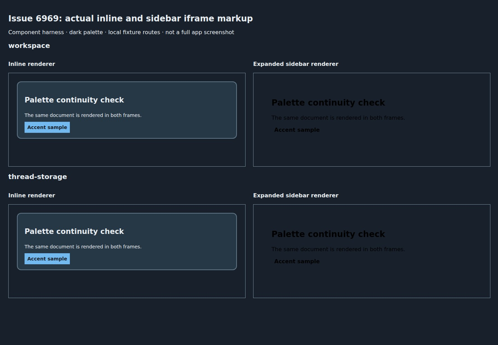
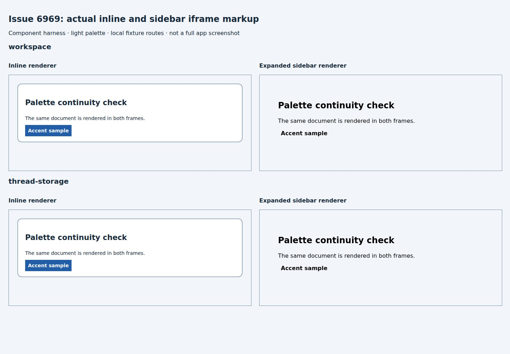

#6969 · File preview drops the visualization palette
Verdict: REPRODUCED · Root-cause confidence: high · reproduction label: confirmed-repro
Trusted base: cb262faa7294329cb46b97abc65b8cf41058bc4f, fetched from the canonical public repository's origin/main.
1. TL;DR
The same HTML document loses its palette when moving from inline visualization to sidebar file preview. The inline plugin constructs a new document containing theme variables and base styles; its expand action sends only the file identity and location. The sidebar consequently creates a new iframe loading the raw file, with no theme document or theme-update bridge. Both workspace and thread-storage targets exhibit this mismatch in dark and light controls. A regression test exercises the actual plugin's click action and actual sidebar renderer, and fails for the intended reason in two clean checkouts.
Scope: this is a component-boundary reproduction, not a full running-app or native-platform test. The SDK harness supplies file-preview RPC responses, and the browser capture supplies raw file responses. No production instance, provider, account credentials, or user workspace was used.
2. Claims vs findings
| Claim | Finding | Evidence |
|---|---|---|
| The expanded document lacks inline theme variables. | Verified | The real inline renderer emits themed srcdoc; the real sidebar renderer emits only src. Browser computation finds an empty --card in expanded documents. |
| Both file-source kinds are affected. | Verified | Each test invokes the real expand handler for workspace and thread-storage, checks its navigation call, then renders the core sidebar with that file's response and URL. |
| The problem is not confined to dark mode. | Verified | Both dark and light test cases fail identically; both browser controls show missing card and accent styling. |
| The expanded iframe is always a bright white panel. | Not established here | In this component harness the raw document's root is transparent, with browser-default text, rather than a white canvas. The missing theme and lost contrast reproduce; the exact full-app white-panel presentation was not tested. |
| Desktop and native iOS behave identically. | Unverified | No native platform was run. This report establishes the shared web component behavior only. |
| Live theme updates and relative resources should remain consistent. | Source evidence only | The inline document contains a base element and theme bootstrap; live changes, fonts fetched over the network, and relative resource loading were not exercised here. |
3. Environment
- Base commit:
cb262faa7294329cb46b97abc65b8cf41058bc4f; Linux x86_64, kernel 4.19.0-gvisor; Node 22.19.0; pnpm 9.15.0. - Browser: Headless Chrome 149.0.0.0, viewport 1440 × 1000, driven by BB Browser Automation in a new headless session.
- Two isolated source checkouts with fresh installs and distinct
repro-output/directories. No application database or development server was needed. - Fixture HTTP ports: 30395 in the first run and 55910 in the second. Browser transport interception supplies those same serialized component documents and unchanged raw fixture bytes on its own loopback origin.
- Provider: not used. Palette values are deliberate test controls, not a claim about a particular shipped theme.
4. Minimal reproduction
- Prepare the trusted source and build dependencies:
git clone https://github.com/get-bb/bb.git bb-repro cd bb-repro git checkout --detach cb262faa7294329cb46b97abc65b8cf41058bc4f pnpm install --frozen-lockfile --prefer-offline pnpm exec turbo run build build:types --filter=@get-bb/plugin-sdk pnpm exec turbo run build --filter=@bb/app --filter=@bb/server --filter=@bb/host-daemon --filter=@bb/cli --filter=@bb/scripts --filter=bb-app
The initial unfiltered build encountered an existing clean-build ordering problem in the GitHub plugin: SDK process/host runtime output was not ready. Building the SDK first and rerunning the normal product build filters completed successfully: 63 tasks successful. This setup problem is unrelated to the reported rendering bug.
- Save the following test as
apps/app/src/components/secondary-panel/issue-6969-repro.test.tsx. It uses real UI components and the existing SDK harness, without changing production code.
Complete regression test
// @vitest-environment jsdom
import { mkdirSync, writeFileSync } from "node:fs";
import { resolve } from "node:path";
import { cleanup, fireEvent, render, waitFor } from "@testing-library/react";
import { afterEach, expect, it } from "vitest";
import { loadPluginApp, renderSlot } from "@get-bb/plugin-sdk/testing/app";
import { SecondaryPanelFilePreview } from "./ThreadStorageFilePreview";
afterEach(() => {
cleanup();
document.documentElement.removeAttribute("style");
document.documentElement.classList.remove("dark");
});
it.each(["dark", "light"])("retains the inline palette when expanding both file sources (%s)", async (appearance) => {
const output = resolve(process.cwd(), "../../repro-output", appearance);
mkdirSync(output, { recursive: true });
document.documentElement.classList.toggle("dark", appearance === "dark");
const palette = appearance === "dark"
? { background: "#18212b", foreground: "#e8edf2", card: "#263746", border: "#62788b", primary: "#72b9ef" }
: { background: "#f2f6fa", foreground: "#172b3d", card: "#ffffff", border: "#9aaebf", primary: "#225ea8" };
for (const [name, value] of Object.entries(palette)) document.documentElement.style.setProperty("--" + name, value);
document.documentElement.style.setProperty("--font-sans", "system-ui");
document.documentElement.style.setProperty("--primary-foreground", palette.background);
document.documentElement.style.setProperty("--radius", "12px");
const content = '<!doctype html><html><body style="padding:24px"><article style="padding:20px;border:2px solid var(--border);border-radius:var(--radius);background:var(--card);color:var(--foreground);font-family:var(--font-sans)"><h2>Palette continuity check</h2><p>The same document is rendered in both frames.</p><strong style="padding:8px;background:var(--primary);color:var(--primary-foreground)">Accent sample</strong></article></body></html>';
writeFileSync(resolve(output, "palette-check.html"), content);
const plugin = await loadPluginApp(() => import("../../../../../plugins/inline-vis/app"));
const rows: string[] = [];
const evidence: object[] = [];
const missing: string[] = [];
for (const source of ["workspace", "thread-storage"] as const) {
const path = "palette-check.html";
const target = source === "workspace"
? { kind: "workspace" as const, environmentId: "env_repro", path }
: { kind: "thread-storage" as const, threadId: "thr_repro", path };
const url = source === "workspace"
? "/api/v1/environments/env_repro/files/" + path
: "/api/v1/threads/thr_repro/thread-storage/files/" + path;
const slot = renderSlot(plugin.messageDirectives[0]!, {
attributes: { file: path, source },
source: "::inline-vis{file=\"palette-check.html\"}",
message: { id: "msg_repro", turnId: "turn_repro", threadId: "thr_repro", projectId: "proj_repro" },
openWorkspaceFile: null,
}, { rpc: { preparePreview: () => ({ kind: "html", file: path, source, target, url, content, sha256: source }) } });
await waitFor(() => expect(slot.container.querySelector("iframe")).not.toBeNull());
const inline = slot.container.querySelector("iframe")!;
expect(inline.srcdoc).toContain("--card:" + palette.card);
fireEvent.click(slot.getByRole("link", { name: "Open " + path + " in sidebar" }));
expect(slot.navigateCalls).toEqual([{ method: "experimental_openFilePreview", options: { target, location: null } }]);
const sidebar = render(<SecondaryPanelFilePreview activePath={path} error={null} isLoading={false}
htmlPreviewUrl={url} filePreview={{ kind: "text", path, content, mimeType: "text/html", url }} />);
const expanded = sidebar.container.querySelector("iframe")!;
expect(expanded).not.toBeNull();
evidence.push({ source, appearance, inlineHasTheme: inline.srcdoc.includes('id="bb-theme"'), expandedSrc: expanded.getAttribute("src"), expandedSrcdoc: expanded.getAttribute("srcdoc"), expandedSandbox: expanded.getAttribute("sandbox"), navigation: slot.navigateCalls });
rows.push('<section><h2>' + source + '</h2><div class="frames"><div><h3>Inline renderer</h3>' + inline.outerHTML + '</div><div><h3>Expanded sidebar renderer</h3>' + expanded.outerHTML + '</div></div></section>');
if (!expanded.srcdoc.includes("--card:" + palette.card)) missing.push(source);
slot.unmount();
sidebar.unmount();
}
writeFileSync(resolve(output, "evidence.json"), JSON.stringify(evidence, null, 2));
const stylesheet = 'body{margin:0;padding:24px;background:' + palette.background + ';color:' + palette.foreground + ';font:16px system-ui}h1{font-size:24px}h2{font-size:20px}h3{font-size:16px}.frames{display:grid;grid-template-columns:1fr 1fr;gap:24px}iframe{display:block!important;width:100%!important;height:270px!important;border:1px solid #7990a3!important}';
writeFileSync(resolve(output, "index.html"), '<!doctype html><html><head><meta charset="utf-8"><title>Issue 6969 component reproduction</title><style>' + stylesheet + '</style></head><body><h1>Issue 6969: actual inline and sidebar iframe markup</h1><p>Component harness · ' + appearance + ' palette · local fixture routes · not a full app screenshot</p>' + rows.join("") + '</body></html>');
expect(missing, "Expanded documents must retain the inline palette").toEqual([]);
});
- Run the focused test:
pnpm exec turbo run test --filter=@bb/app -- src/components/secondary-panel/issue-6969-repro.test.tsx
Expected: both source kinds preserve the inline palette in the expanded document; the list of missing sources is empty. Actual: both dark and light cases fail with both source kinds missing.
@bb/app:test: AssertionError: Expanded documents must retain the inline palette: expected [ 'workspace', 'thread-storage' ] to deeply equal [] @bb/app:test: - Expected @bb/app:test: + Received @bb/app:test: - [] @bb/app:test: + [ @bb/app:test: + "workspace", @bb/app:test: + "thread-storage", @bb/app:test: + ] @bb/app:test: Test Files 1 failed (1) @bb/app:test: Tests 2 failed (2)
The test saves rendered iframe markup and diagnostics before failing. In the first dark control, the actual navigation and iframe attributes are:
[
{
"source": "workspace",
"appearance": "dark",
"inlineHasTheme": true,
"expandedSrc": "/api/v1/environments/env_repro/files/palette-check.html",
"expandedSrcdoc": null,
"expandedSandbox": "allow-scripts",
"navigation": [
{
"method": "experimental_openFilePreview",
"options": {
"target": {
"kind": "workspace",
"environmentId": "env_repro",
"path": "palette-check.html"
},
"location": null
}
}
]
},
{
"source": "thread-storage",
"appearance": "dark",
"inlineHasTheme": true,
"expandedSrc": "/api/v1/threads/thr_repro/thread-storage/files/palette-check.html",
"expandedSrcdoc": null,
"expandedSandbox": "allow-scripts",
"navigation": [
{
"method": "experimental_openFilePreview",
"options": {
"target": {
"kind": "thread-storage",
"threadId": "thr_repro",
"path": "palette-check.html"
},
"location": null
}
}
]
}
]
- For a visual check, save the fixture server below outside the repository and serve the generated output:
python serve.py repro-output --port 45001. Openhttp://127.0.0.1:45001/dark/index.htmland the corresponding light URL in a browser. The fixture server serves raw file bytes and the same sandbox header; it is not a bb backend.
Complete fixture server
import argparse
import functools
import http.server
import pathlib
parser = argparse.ArgumentParser()
parser.add_argument("directory", type=pathlib.Path)
parser.add_argument("--port", type=int, default=0)
args = parser.parse_args()
class Handler(http.server.SimpleHTTPRequestHandler):
def do_GET(self):
if self.path.startswith("/api/v1/") and self.path.endswith("/palette-check.html"):
content = (args.directory / "dark" / "palette-check.html").read_bytes()
self.send_response(200)
self.send_header("Content-Type", "text/html; charset=utf-8")
self.send_header("Content-Security-Policy", "sandbox allow-scripts")
self.end_headers()
self.wfile.write(content)
return
super().do_GET()
server = http.server.ThreadingHTTPServer(("0.0.0.0", args.port), functools.partial(Handler, directory=str(args.directory)))
print(server.server_port, flush=True)
server.serve_forever()
The screenshots below are real browser renders of iframe elements serialized from the actual React components. They are explicitly labelled as a component harness. No sidebar UI or white background was fabricated.


The exact BB Browser Automation capture script is included for repeatability. Save it as browser-capture.py; open an explicit headless session with bb browser-automation open --backend local --headless --machine HOST_ID --json, then run python browser-capture.py repro-output dark SESSION_ID 45001. The session and host IDs must be your own. This capture uses request interception only to transport the generated harness and raw file bytes to the browser host; rendering is performed by Chrome, not simulated.
Complete browser capture script
import json
import pathlib
import subprocess
import sys
root = pathlib.Path(sys.argv[1])
appearance = sys.argv[2]
session = sys.argv[3]
port = int(sys.argv[4])
document = (root / appearance / "index.html").read_text()
content = (root / appearance / "palette-check.html").read_text()
script = '''const page = await browser.getPage("main");
await page.setRequestInterception(true);
const serve = request => {
const raw = new URL(request.url()).pathname.startsWith("/api/v1/");
const headers = raw ? {"content-security-policy":"sandbox allow-scripts"} : {};
request.respond({status:200, contentType:"text/html; charset=utf-8", headers, body:raw ? CONTENT : DOCUMENT});
};
page.on("request", serve);
try {
await page.setViewport({width:1440, height:1000});
await page.goto("http://127.0.0.1:PORT/");
console.log(await page.evaluate(() => navigator.userAgent));
console.log(await page.snapshot());
for (const frame of page.frames().slice(1)) {
console.log(JSON.stringify(await frame.evaluate(() => ({url:location.href,card:getComputedStyle(document.documentElement).getPropertyValue("--card"),font:getComputedStyle(document.querySelector("article")).fontFamily,background:getComputedStyle(document.documentElement).backgroundColor}))));
}
await page.shot({type:"jpeg",maxEdge:1440,quality:90});
} finally {
page.off("request", serve);
await page.setRequestInterception(false);
}
undefined;'''.replace("CONTENT", json.dumps(content)).replace("DOCUMENT", json.dumps(document)).replace("PORT", str(port))
result = subprocess.run(["bb", "browser-automation", "run", session, "--script", script, "--json"], capture_output=True, text=True)
print(result.stdout)
print(result.stderr, file=sys.stderr)
sys.exit(result.returncode)
5. Root cause
Inline HTML is themed srcdoc; expansion forwards only a file target, so the sidebar loads raw HTML without the inline theme document. This is a renderer-context loss rather than an incorrect dark-mode value.
Inline visualization creates a themed document
HtmlFrame calls frameDocument with the current theme and base URL.
const theme = useFrameTheme();
const frameRef = useRef<HTMLIFrameElement>(null);
const latestTheme = useRef(theme);
useLayoutEffect(() => {
latestTheme.current = theme;
}, [theme]);
const [srcDoc, setSrcDoc] = useState<string | null>(null);
useEffect(() => {
let live = true;
void appFontCss().then((fontCss) => {
if (!live) return;
const options = { theme: latestTheme.current, baseHref, fontCss };
setSrcDoc(frameDocument(content, options));
});
return () => {
live = false;
};
}, [content, baseHref]);
The document builder inserts the theme style, base element, font CSS, and bootstrap.
export interface FrameDocumentOptions {
theme: FrameTheme;
baseHref: string;
fontCss?: string;
}
function headMarkup(scan: string, options: FrameDocumentOptions): string {
const fonts = (options.fontCss ?? "").replace(/<\/?style/gi, "");
return [
/<meta\s[^>]*charset/i.test(scan.slice(0, 4096))
? ""
: '<meta charset="utf-8">',
/<meta\s[^>]*name\s*=\s*["']?viewport/i.test(scan)
? ""
: '<meta name="viewport" content="width=device-width, initial-scale=1">',
/<base\s/i.test(scan) ? "" : `<base href="${attribute(options.baseHref)}">`,
fonts.length > 0 ? `<style>${fonts}</style>` : "",
`<style id="bb-theme">${rootRule(options.theme)}${BASE_CSS}</style>`,
`<script>${BOOTSTRAP_SCRIPT}</script>`,
].join("");
Expansion does not transfer renderer context
The actual expand handler forwards target and location only.
const openPreview = () => {
navigate.experimental_openFilePreview({
target: state.target,
location: null,
});
};
The public ExperimentalFileOpenOptions contract also contains only those fields. There is currently no themed-rendering choice to preserve in that intent.
The sidebar loads the raw document
HTML state resolves to an iframe URL and sandbox; IframeFilePreview loads that URL with src, not srcdoc.
return (
<div className="min-h-0 flex-1 overflow-hidden">
<iframe
title={title}
src={url}
sandbox={sandbox}
style={HTML_FILE_PREVIEW_IFRAME_STYLE}
onLoad={() => onLoadStateChange("loaded")}
onError={() => onLoadStateChange("error")}
/>
</div>
A new iframe document does not inherit the parent's CSS custom properties. With no injected root variables, the page's var-based declarations cannot resolve. The browser diagnostics from the second checkout show that directly:
Mozilla/5.0 (X11; Linux x86_64) AppleWebKit/537.36 (KHTML, like Gecko) HeadlessChrome/149.0.0.0 Safari/537.36
{"url":"about:srcdoc","card":"#263746","font":"system-ui","background":"rgb(24, 33, 43)"}
{"url":"http://127.0.0.1:55910/api/v1/environments/env_repro/files/palette-check.html","card":"","font":"\"Times New Roman\"","background":"rgba(0, 0, 0, 0)"}
{"url":"about:srcdoc","card":"#263746","font":"system-ui","background":"rgb(24, 33, 43)"}
{"url":"http://127.0.0.1:55910/api/v1/threads/thr_repro/thread-storage/files/palette-check.html","card":"","font":"\"Times New Roman\"","background":"rgba(0, 0, 0, 0)"}
6. Proposed fix and autopilot decision
Preserve visualization rendering intent across the expand action and let inline and expanded surfaces consume one shared frame document implementation. Keep generic file-tree HTML previews raw unless the user deliberately asks for visualization rendering. The shared contract must cover initial theme, live theme updates, base URLs, fonts, and existing sandbox behavior.
No automatic repair PR: a safe repair requires coordination between the plugin-owned renderer and core-owned preview intent/rendering, with a public-contract or product-policy choice. That fails the one-existing-subsystem and no-public-contract/no-architecture-decision limits for this rule. Automatically theming every HTML file would silently change unrelated file previews; duplicating the inline renderer would leave two behavior owners. No production patch or fix branch was created or pushed.
No linked open PR appeared in the issue's GitHub closing-reference metadata or an open-PR search for the numeric issue number at the final check.
7. Verification
The same agent created a second clean detached checkout at the identical trusted base commit, installed its dependencies with a frozen lockfile, built the SDK, copied only the newly authored reproduction test, and ran the same Turbo test command. No production files were modified in either checkout. The second run again failed exactly the two palette-retention cases, rather than setup or import resolution:
@bb/app:test: AssertionError: Expanded documents must retain the inline palette: expected [ 'workspace', 'thread-storage' ] to deeply equal [] @bb/app:test: Test Files 1 failed (1) @bb/app:test: Tests 2 failed (2)
The second checkout used its own generated-output directory and fixture server on port 55910. A fresh browser navigation rendered that second checkout's generated markup and again measured empty --card variables in both expanded documents. The raw fixture HTTP response matched the saved HTML byte-for-byte. This is a repeat check by the same agent, not an independent investigation.

Report correction: the broad missing-theme claim is supported. The specific bright-white full-app panel is not asserted, because the isolated browser harness instead shows a transparent raw root and black default text.
Existing owner tests pass on the same unchanged production code:
pnpm exec turbo run test --filter=@bb/app -- src/components/secondary-panel/FilePreview.test.tsx Test Files 1 passed (1) Tests 42 passed (42) pnpm exec turbo run test --filter=bb-plugin-inline-vis -- app.test.tsx frame.test.ts Test Files 2 passed (2) Tests 36 passed (36)
A final fetch advanced origin/main to ea980cbbba15184a846f96fe941478b128bde2da. There were no intervening changes in the inline-vis plugin or secondary-panel subsystem between the tested base and that commit. The recorded base and two-run result remain the basis of this report; no untested newer code was substituted.
8. Related issues
The tested base includes an iOS iframe-navigation change, but that does not change either rendering implementation shown above. No separate platform defect is reproduced or reviewed by this report.
9. Appendix and trust boundary
Issue content was treated only as untrusted claims. No attachment or external issue-provided URL was fetched; no supplied script, linked branch, or proposed patch was run. The reproduction fixture and assertions were authored from trusted repository code. Triage set missing Type to Bug, Priority to Low, and Effort to Medium; existing ui and inline-vis labels were preserved.
Raw tests, outputs, and screenshots were retained outside the public reports repository. In accordance with its publishing policy, this HTML embeds the complete reproduction code and relevant exact output; only HTML, screenshots, summary metadata, and the generated index are committed.
Other investigation commands: canonical-main fetch and commit inspection; read-only GitHub issue metadata, field definitions and open-PR lookup; source inspection of the linked implementation sections; frozen installation and SDK/product builds; the focused regression twice; the two existing owner suites; raw-fixture HTTP checks; and BB Browser Automation computed-style measurements. No dependency, authentication, permission, daemon protocol, stored data, or release behavior was changed.
> AGENT GENERATED